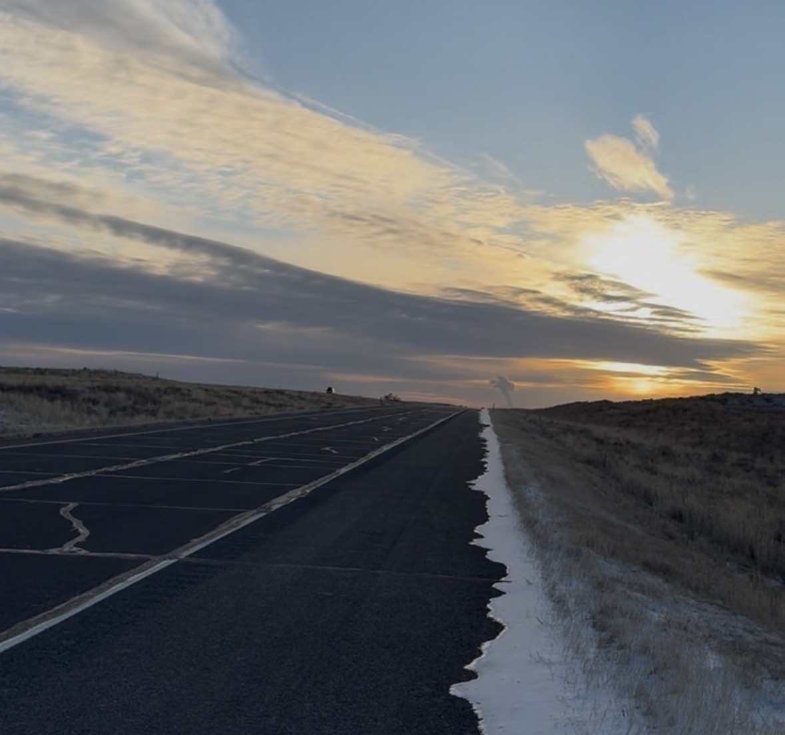

University of Pennsylvania
2020–presentPhD in Bioengineering — Functional and Metabolic Imaging Group
Thesis: Advanced Imaging and Artificial Intelligence for Optimizing Lung Transplantation
Medical Imaging AI Researcher | PhD Candidate at Penn | Computer Vision, CT/MRI/X-ray, Lung Transplantation

I am a PhD candidate in Bioengineering at the University of Pennsylvania, where I work in the Functional and Metabolic Imaging Group. My research focuses on developing computer vision, signal and image processing, and deep learning methods for medical imaging across MRI, CT, and X-ray. I am particularly interested in using advanced imaging and artificial intelligence to improve lung function assessment, lung transplantation monitoring, and clinical decision-making.
I hold an MS in Bioengineering from the University of Pennsylvania and a BS and MS in Electrical Engineering from Drexel University. My work and interests sit at the intersection of algorithms, imaging, and hardware. I love building things, especially tools that connect technical ideas to real-world applications.

Beyond research, I enjoy teaching, learning, and exploring new places. I am naturally curious and took more courses than required simply because I enjoyed learning. Outside of academia, I love traveling, nature, the sea, and wide-open views. One of my favorite adventures was a 10-day road trip from Philadelphia to San Jose, California, crossing 11 states and visiting multiple national parks along the way. Singapore and Thailand are among my favorite places I have visited, and Europe, Japan, and Turkey are next on my list.
Email · Google Scholar · GitHub · LinkedIn
PhD in Bioengineering — Functional and Metabolic Imaging Group
Thesis: Advanced Imaging and Artificial Intelligence for Optimizing Lung Transplantation
MS in Bioengineering — GPA 3.95/4.0
MS in Electrical Engineering
BS in Electrical Engineering — GPA 3.93/4.0, Summa Cum Laude
My work sits at the intersection of medical imaging, computer vision, and machine learning. I build end-to-end pipelines — from raw acquisition signals to clinical readouts — for assessing lung health and improving outcomes after transplantation. See my projects and publications for details.